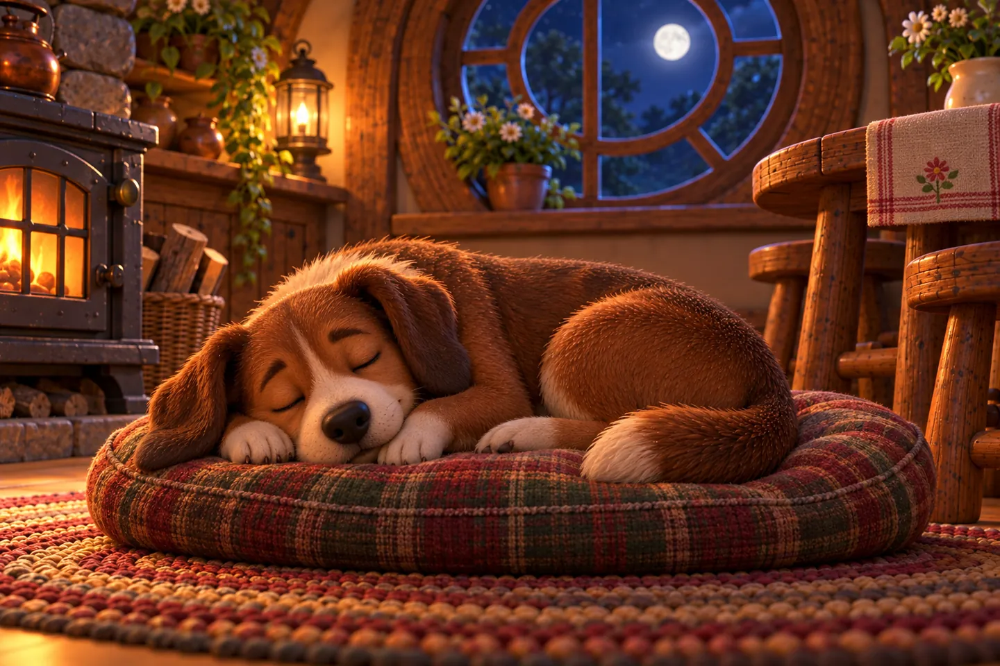
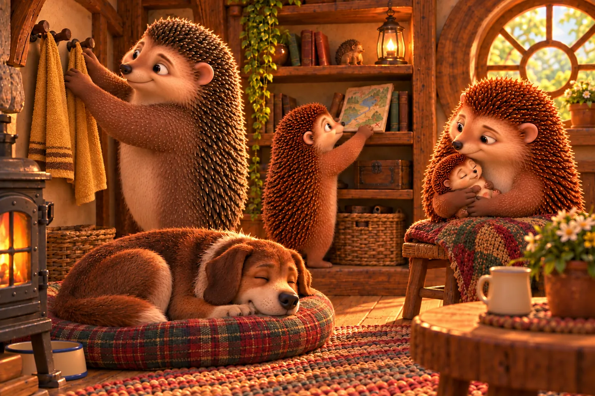
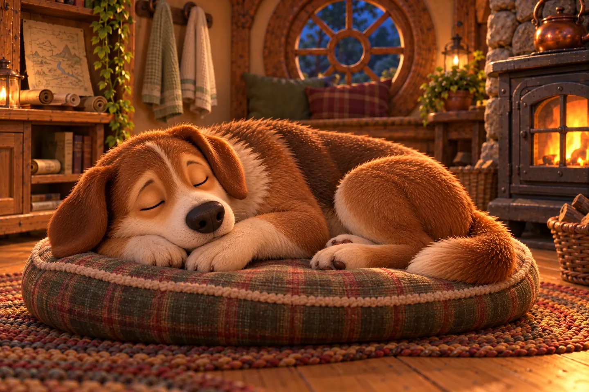

Scooby's home identity corrections
Candidate review, not the live edition. Correct the adult dog's anatomy from the approved previous chapter, independently of the sleeping pose. Room composition is inherited from the edit target, not measured-house certification.
Proposed cave map and cameras · Exact prompts/reference hashes and review records
Reader page 53

Published R6 Identity correction v2; review required
Identity correction v2; review requiredReader page 214

Published R6 Identity correction v1; review required
Identity correction v1; review requiredReader page 216

Published R6 Identity correction v1; review required
Identity correction v1; review required